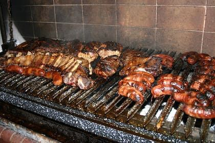

Turismo en Trelew
Trelew, ubicada en el corazón del Valle del Río Chubut, es una ciudad con un rico patrimonio cultural y paleontológico, ideal para el turismo. Destacan el Museo Paleontológico Egidio Feruglio, con impresionantes réplicas de dinosaurios, y el Bosque Petrificado Florentino Ameghino, un sitio arqueológico único. Además, la ciudad ofrece circuitos históricos, como el Museo Pueblo de Luis, y actividades recreativas en la Laguna Chiquichano, donde se encuentra una réplica del Tiranotitán Chubutensis. Atractivos Turísticos: Museo Paleontológico Egidio Feruglio (MEF): Un museo reconocido internacionalmente por sus colecciones de fósiles, incluyendo réplicas de dinosaurios como el Titanosaurio. Bosque Petrificado Florentino Ameghino: Un área protegida con árboles petrificados que datan de millones de años, ofreciendo un vistazo a la historia geológica de la región, según Tripadvisor. Museo Pueblo de Luis: Un museo histórico que recrea la vida en Trelew a fines del siglo XIX y principios del XX, según Tripadvisor. Laguna Chiquichano: Un área recreativa con senderos para caminar, espacios verdes y la réplica del Tiranotitán Chubutensis, un dinosaurio de gran tamaño. Plaza Independencia: Un espacio céntrico con valor histórico y cultural, rodeado de edificios emblemáticos. Circuito Histórico: Recorridos por el casco histórico de Trelew, incluyendo la Capilla Galesa Tabernacl y otros puntos de interés. Punta Tombo (aunque no está en Trelew, es una excursión cercana): Una reserva natural donde se puede observar una gran colonia de pingüinos de Magallanes. Actividades Adicionales: Excursiones a Estancias: Visitas a estancias rurales para conocer la vida en el campo patagónico, como Estancia Las Bardas. Gastronomía: Degustación de productos regionales, como frutas finas y elaboraciones con cerezas y manzanas, productos típicos de la zona. Casino Club Trelew: Un lugar para el entretenimiento y la diversión.
Para ilustrar, puedes reemplazar las siguientes rutas por fotos de atracciones turísticas.
